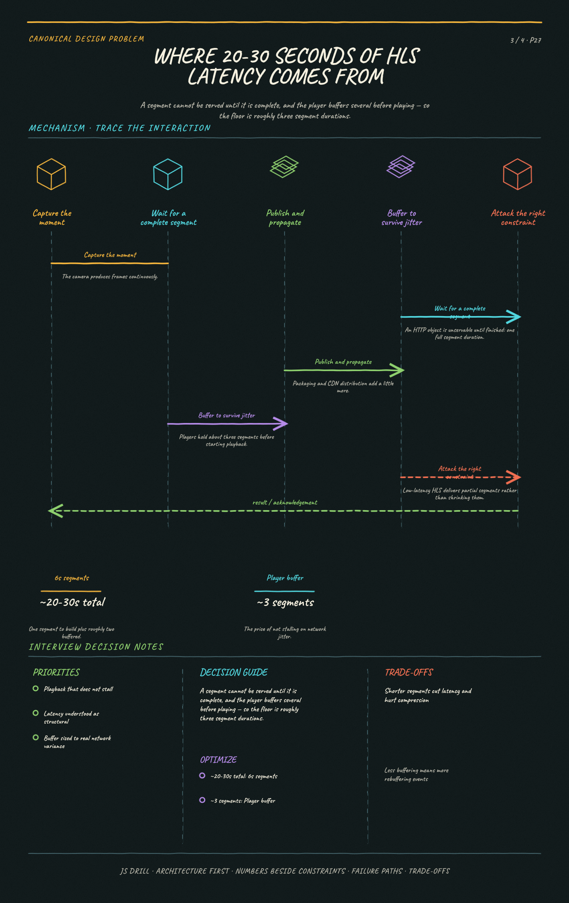

https://frosty110.github.io/js-drill/assets/system-design/infographics/design-problems/p27/segment-latency-budget.pngA segment cannot be served until it is complete, and the player buffers several before playing — so the floor is roughly three segment durations.
Broadcast one creator's video to millions of concurrent viewers with only seconds of delay, plus a live chat that fans out to the same audience. The signature challenge is that latency and scale pull in opposite directions — the CDN that makes a million viewers affordable is the same thing that adds the delay interactivity can't tolerate.
All questions, model answers and diagrams for Design a Live Streaming Service →